**Project Report**
Student Name/-s: Wu Zhanyi(22-737-266)
# Motivational Image
The top two images are motivational visuals inspired by an animation. They transition from a winter scene to a spring scene.
To align with this year's theme, I combined the two images. The left side depicts a winter scene, while the right shows a spring scene, with two characters standing between these two environments. I want to emphasize that our life is always in between two opposite extremes. Keep going, though the path to other side might be broken, but there always is one.
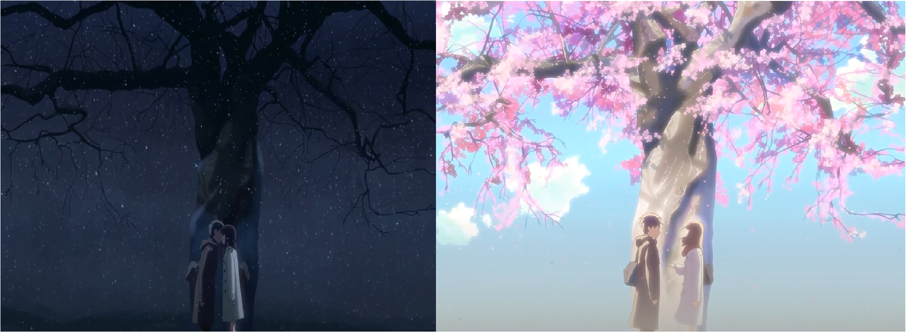
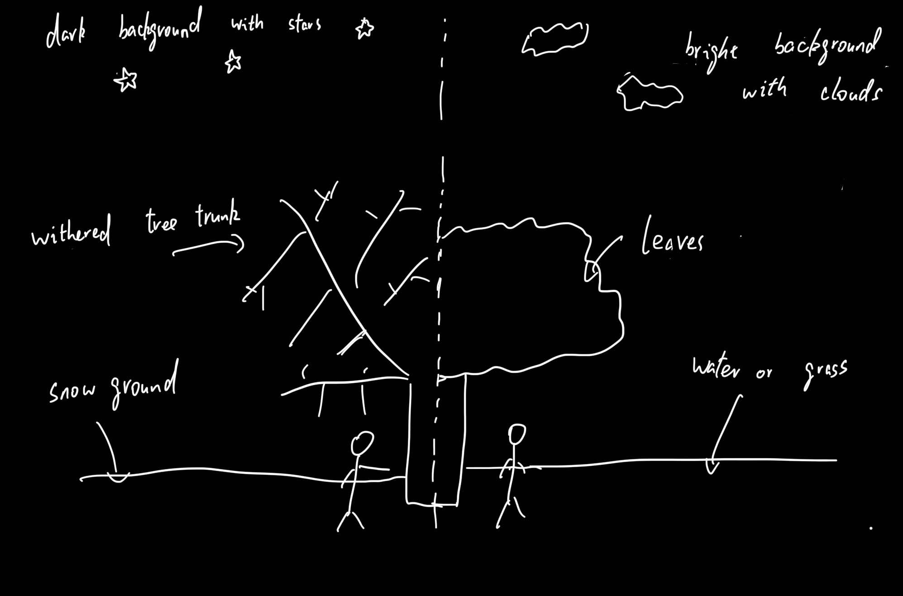
# Selected Features
ID | Short Name |Points | Features (if required) & Comments
--------|---------------------------|-------|------------------------------------
15.3 | Environment Map Emitter | 15 |
15.4 | Homogeneous Participating Media | 15 |
30.2.1 | Subsurface Scattering | 30 | diffusion dipole
Total || 60 |
# Feature explaination and validation
## **Environment Map Emitter**
Environment Map Emitter is used for background.
My environment emitter allows user to give a exr file name and generate corresponding emitter. The emitter supports importance sampling.
The algorithm is same as that in the lecture. Load the file and multiple sin(theta) according to their row. Then compute marginal PDF of each row. At last compute conditional PDF in each row.
### Involved files
These files are involved in this feature:
* src/envmapper.cpp
* src/scene.cpp
* include/nori/scene.h
### importance sampling validation
I'll first test the importance sampling with several files. These tests are aiming to check whether the probability is proportional to the luminance.
*test 1:*
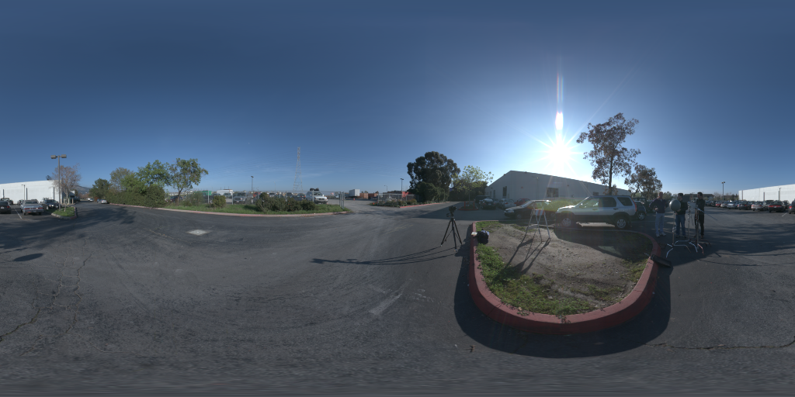
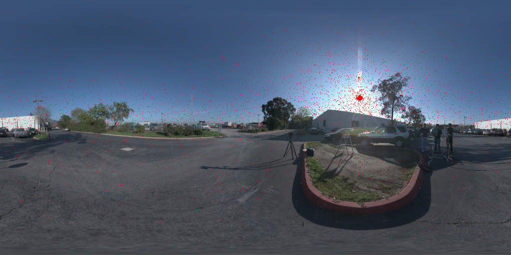
*test 2:*
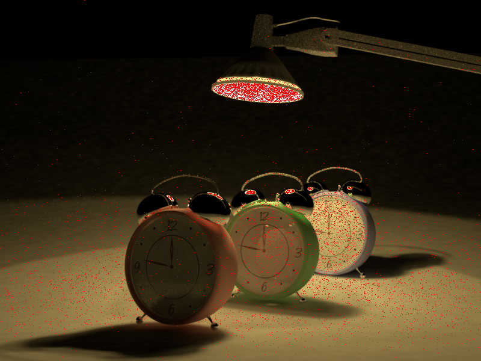
As shown in images, the sampling points gather at high luminance places. Especially in second image, there are almost no points in dark shadow and most points are on specular reflection of clock and bulb.
### rendering validation
I Build a scene with three spheres (mirror, dielectric, and diffuse) and render with a high-resolution EXR image. Result is compared with PBRT.
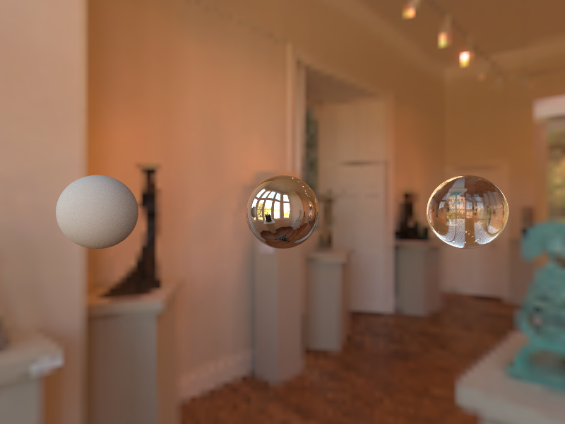
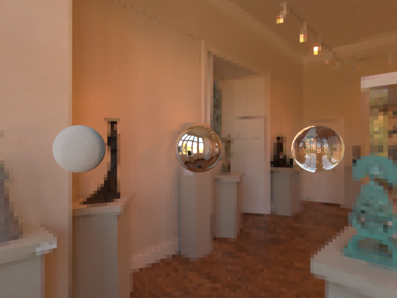
Due to different camera fov computation in PBRT, here the results might be slightly different. But we can obviously see the behavior of environment emitter are the same between two image.
## **Homogeneous Participating Media**
Heterogeneous Participating Media is used for water and snow ground.
### Medium base class and Homogeneous medium.
First I create a Medium class for general medium operations. It contains two operations: transmittance and sample. Transmittance computes how much energy is lost given travelling distance in the medium.
Sample computes how will light travel in the medium. Every medium has a phase function (I use HG phase here). Phase function will help sample the direction of next ray.
Transmittance is trivial in homogeneous medium. It simply return the $e^{\sigma_{tr}*distance}$.
Sample first sample a distance $t$. If $t$ does not exceed the max distance that ray can travel in the medium, then scattering happened. Using phase function to sample a outgoing direction and record the scattering position. If $t$ exceeds the max distance,
it is regarded as a transmittance. Let $t=maxDist$ and ray's direction remains the same. Last generate the next ray and computes transmittance of their $t$.
### Volume integrator
Path_mis from PA4 is not enough for volumetric rendering. I implement a new integrator based on it. It should behave exactly same as path_mis without any medium in the scene.
At the start of path tracing loop, if the ray is in any medium, sample the next ray. If next ray is scattering or transmittance but do not intersect with any BSDF surface, setup next ray, $throughput\,*=\,transmittance$. If it is scattering, compute the direct lighting of this point.
If the ray intersects with a BSDF surface, then computation is same as path_mis. The code structure here is following PBRT. The MIS computation is replaced with a sampleLight function. In this function, medium is also be considered. If the direct lighting point is a scattering point, sample phase function instead of BSDF.
### Other modification
In order to set ray's medium correctly, I attach ext_medium and int_medium to every shape. Then if $\cos{w_o} < 0$ then the ray is shooting out of material, medium should be set as ext_medium.
### Involved files
These files are involved in this feature:
* include/nori/medium.h
* include/nori/shape.h
* src/homogeneous.cpp
* src/volume.cpp
### parameters validation
I will compare different setting of medium with PBRT here.
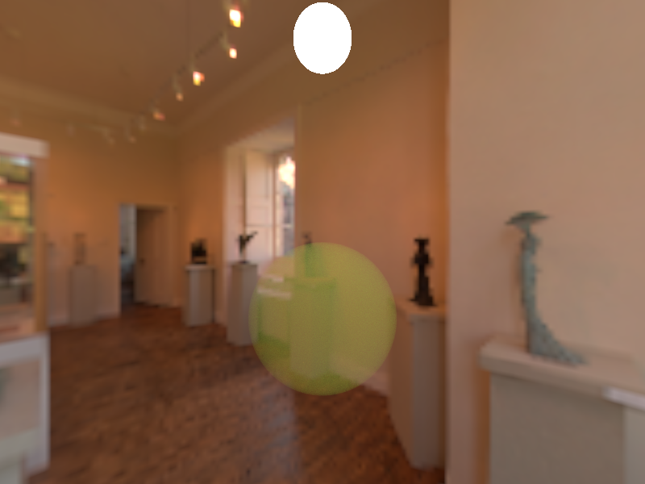
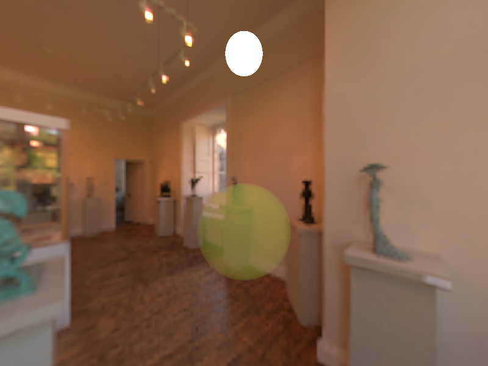
Then with $\sigma_s(0.24 0.28 0.21)$ $\sigma_a(0.132 0.17 0.18)$
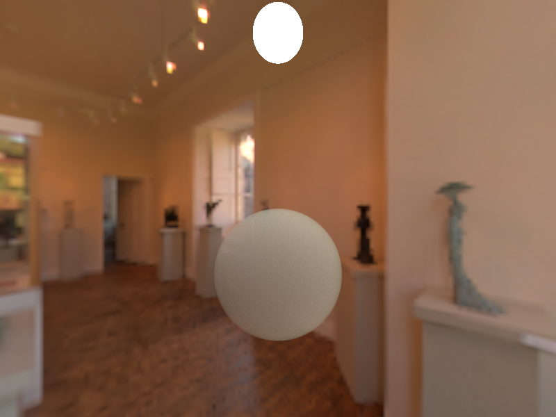
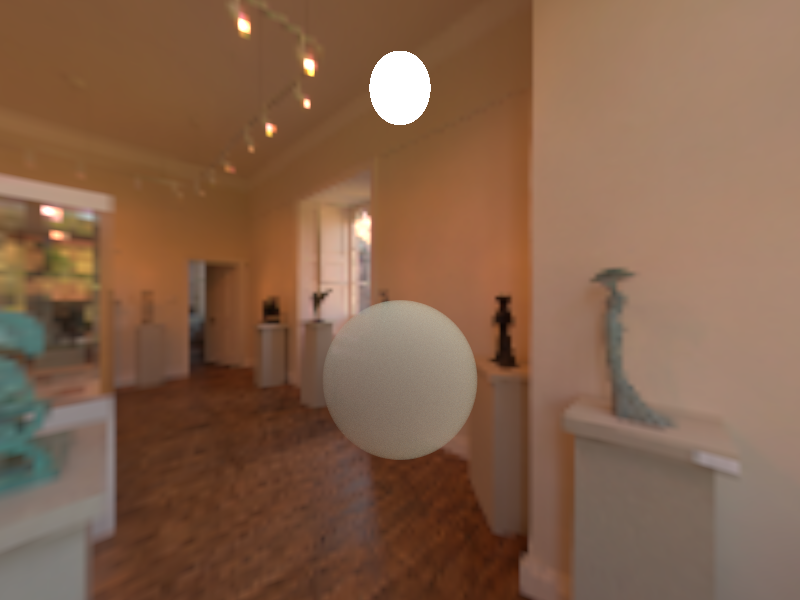
With same $\sigma_s(0.24 0.28 0.21)$ $\sigma_a(0.132 0.17 0.18)$ but $g=-0.5$
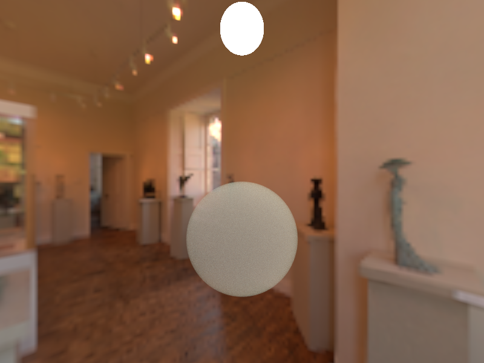
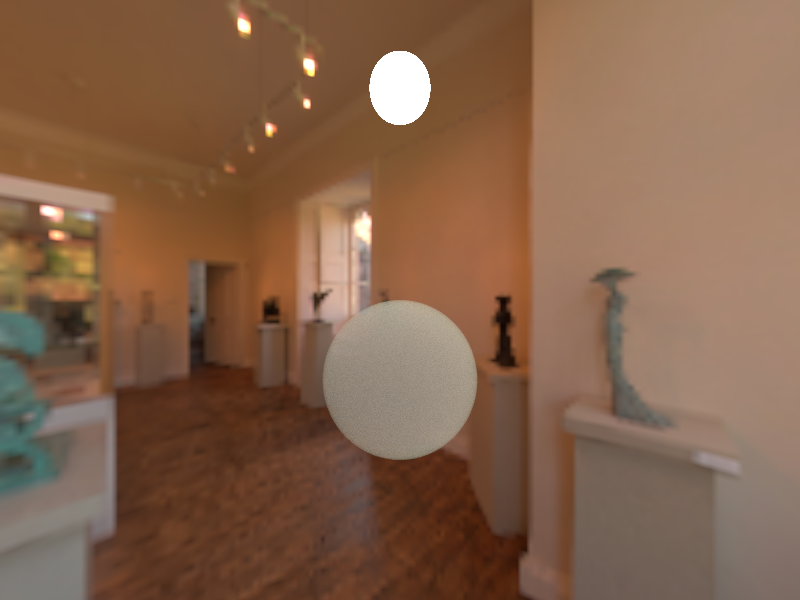
Medium can also works with BSDF. The left sphere has dielectric surface.
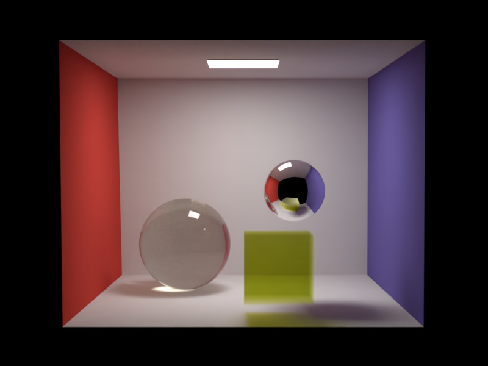
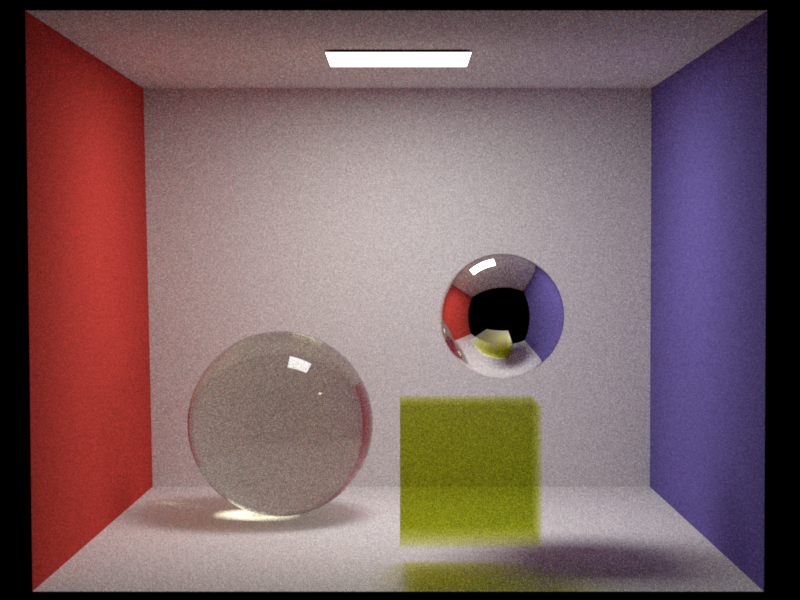
### Effect of parameters
Here is a set of balls that changing the parameters of medium.
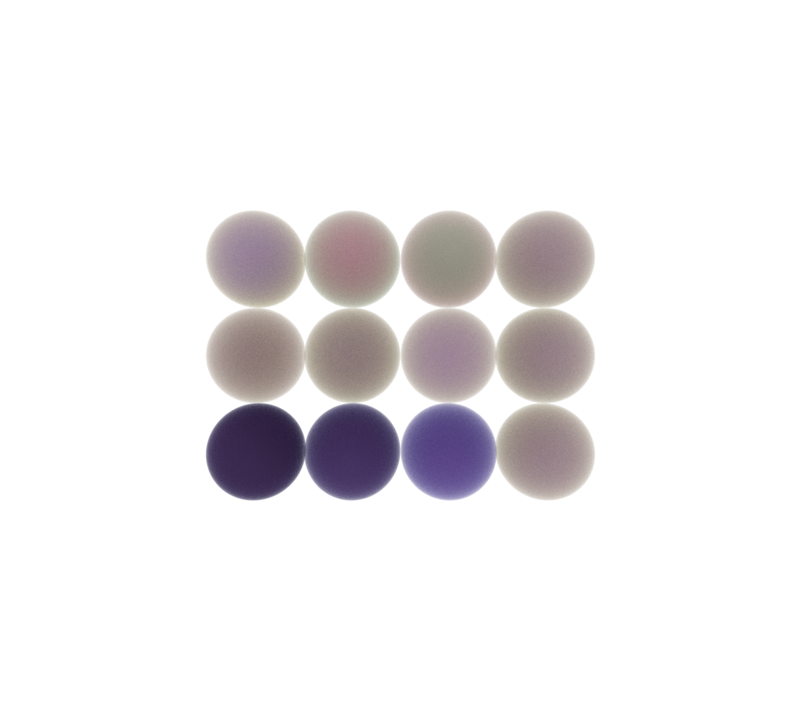
First row changes $\sigma_a$. Second row changes $g$ and the last row changes $\sigma_s$
## **Subsurface Scattering**
Subsurface Scattering is used for leaves and skin.
### Reference and assumption
The main problem in SSS is how to compute BSSRDF and how to find the next scattering point. Since there're multiple ways to implement, I refer to paper below to finish my SSS:
* sampling: King, Alan, et al. "BSSRDF importance sampling." ACM SIGGRAPH 2013 Talks. 2013. 1-1
* BSSRDF computing: d’Eon, Eugene. "A better dipole." Eugene d’Eon 14 (2012).
* dipole diffusion: Wann Jensen, Henrik, et al. "A practical model for subsurface light transport." Seminal Graphics Papers: Pushing the Boundaries, Volume 2. 2023. 319-326.
Dipole diffusion makes much assumptions that reduce the $S_d$ term(multi scattering term) to a function that only depends on distance between incident and scattering point.
A better dipole simplify the BSSRDF computation. It points out that in the original paper, $S = S_0+S_1+S_d$. We can assume the material is semi-infinite thick. So $S_0$ can be ignored. Then it points out that add $S_1$ term to S will not help improve the performance and even be harmful. So the $S_d$ term is the only term left.
BSSRDF importance sampling gives a new way to sample the scattering point. The normal point may face problem when the incident point is near a cliff. Then using normal as prob ray's direction has quite low probability to sample those point on the cliff since they are parallel to the normal. It suggests choosing another two tangent as prob ray's direction might help. In my implementation, 50% will choose normal and 25% for tangents.
The problem I face is how to sample the outgoing direction of scattering point. Most paper concentrate on sampling points but few of them tell how to sample direction. In PBRT, they use computed data to construct a new BSDF to sample the direction. I follow this idea as well. But since I don't know how do they build their new BSDF, I build a BSDF myself. But the results might be different due to the BSDF difference. Since my BSSRDF supports user added BSDF, I'll try two different BSDF to show my assumption about PBRT's BSDF and my result.
### Involved files
These files are involved in this feature:
* include/nori/BSSRDF.h
* include/nori/shape.h
* src/BSSRDF.cpp
* src/volume.cpp
### validation
In my opinion, SSS can only happens when the light shoots into material after BSDF. So a transmission BSDF will be a must for BSSRDF. Till now, only dielectric supports this feature. I developed a new BSDF that use albedo to decide ray's direction. The ray diffuse reflect by albedo probability and the remaining refraction into material.
Here is my result with different BSDF.
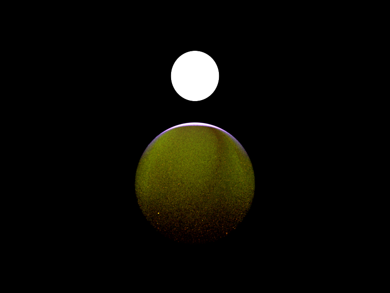
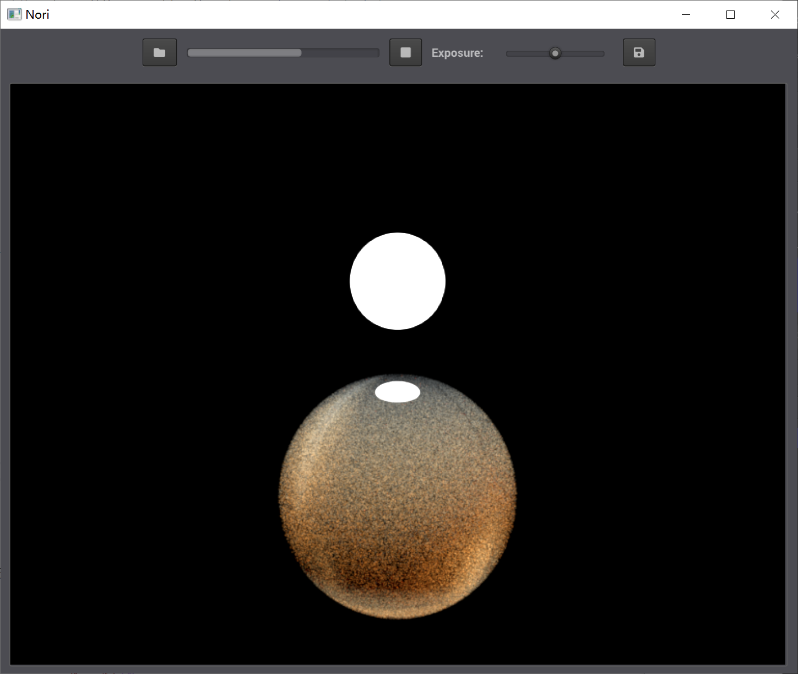
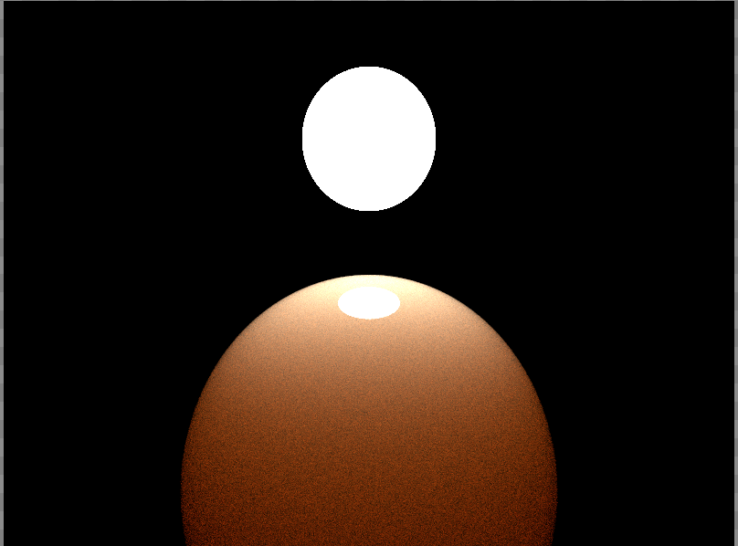
As you can see, dielectric has better fit with PBRT's specular and color behavior. But too much energy comes into material that makes whole sphere bright. In the meanwhile, the transmissDiffuse has similar behavior of lower hemisphere.
PBRT's BSDF uses parameter called Specular reflection and Microfacet roughness. I think their BSDF is somehow mixture of dielectric and microfacet. But it is out of this task's range.
Since PBRT's BSSRDF doesn't suppport user specified BSDF. So the following part I'll use PBRT default BSSRDF setting, which will cause difference. All of them use Skin1 setting $\sigma_{s'}=(0.032, 0.17, 0.48)$,$\sigma_{a}=(0.74, 0.88, 1.01)$
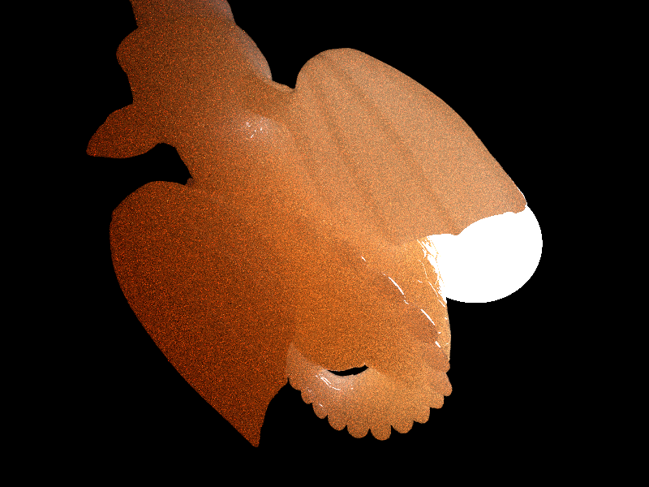
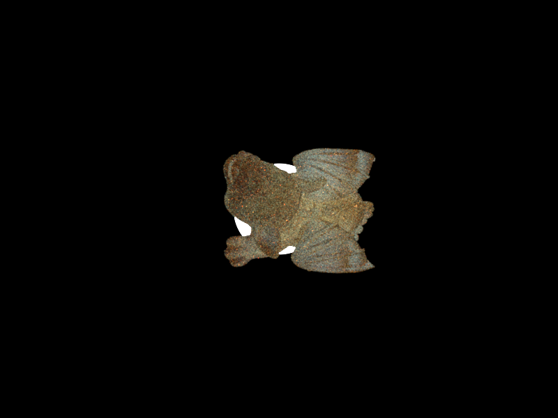
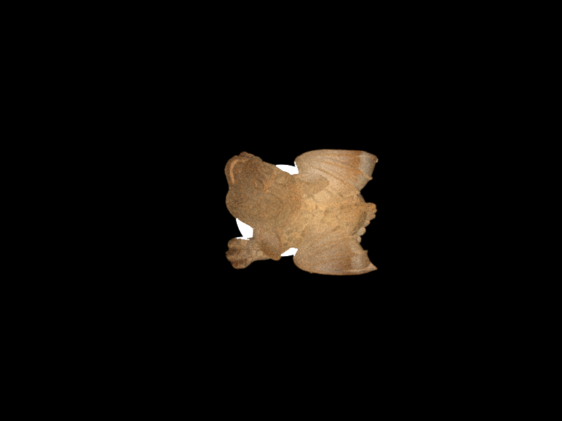
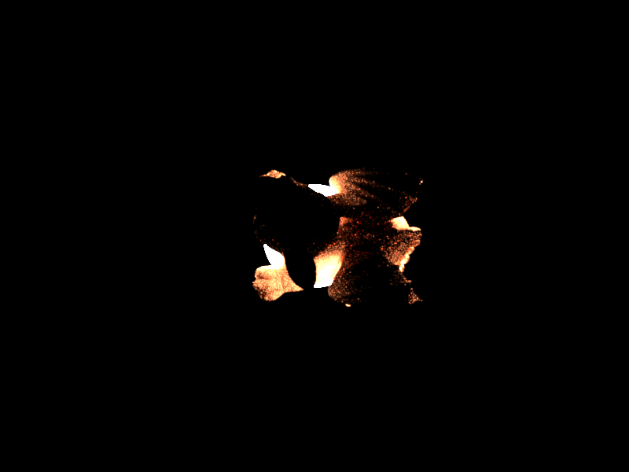
Here is result of Marble setting $\sigma_{s'}=(2.19,2.62,3.00)$,$\sigma_{a}=(0.0021,0.0041,0.0071)$.
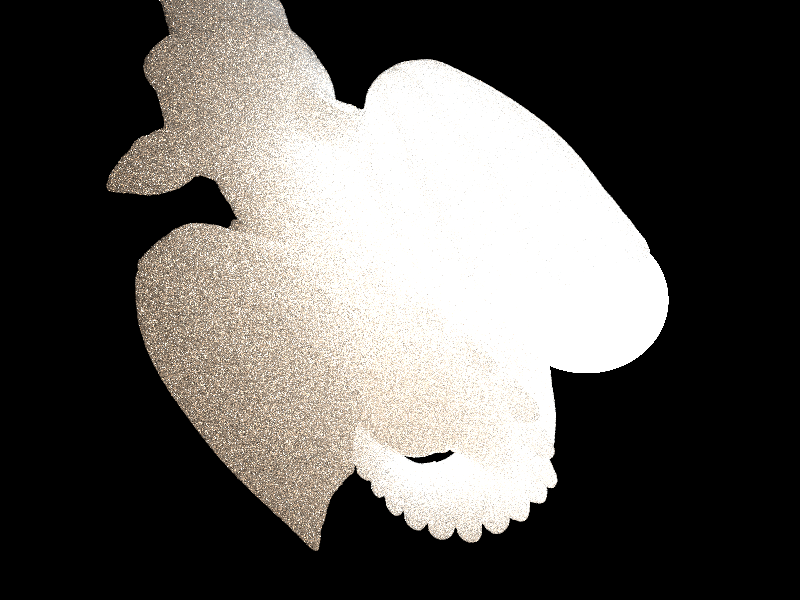
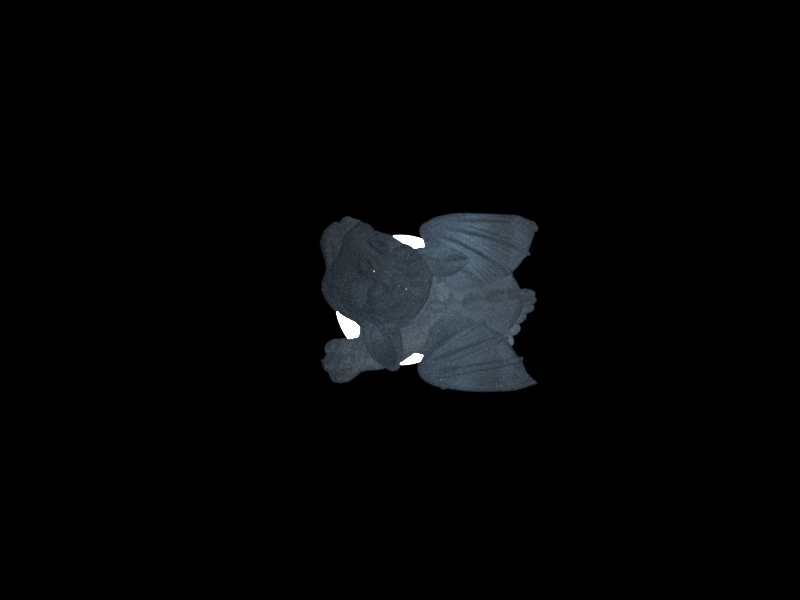
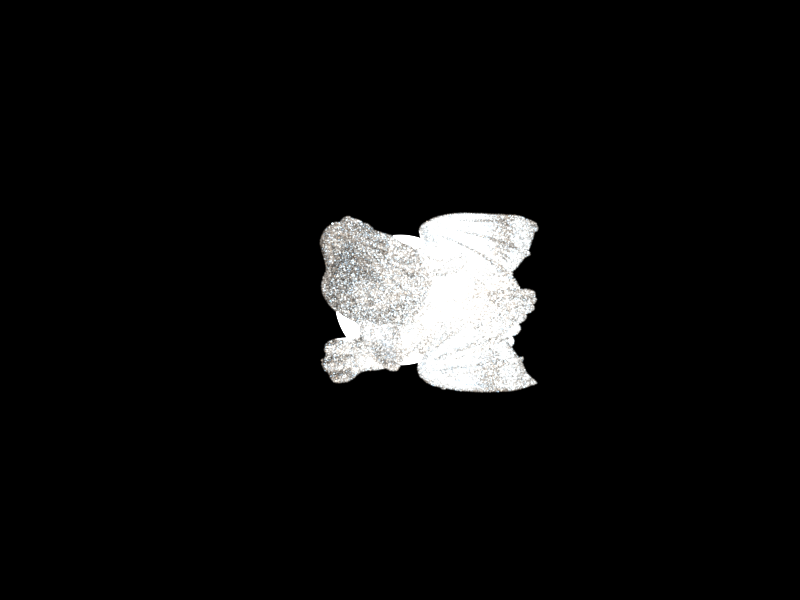
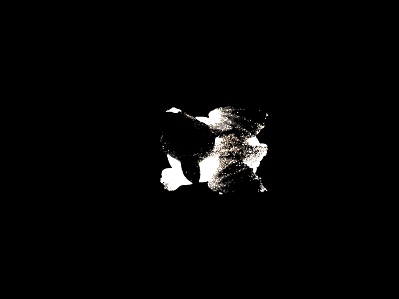
Both two of my BSSRDF has similar behavior of PBRT. TransmissDiffuse is closer to PBRT in Skin setting. Dielectric is closer to PBRT in marble setting. Diffuse result can prove the correctness of my implementation. Without BSSRDF, even with highest explosure, most part of dragon cannot be lit up.
## **Final scene**
After validating each feature, here is my final image. The background is using environment emitter. The skull,scarecrow,boy are using BSSRDF. The boy is standing in the water. The water is using homogeneous medium.
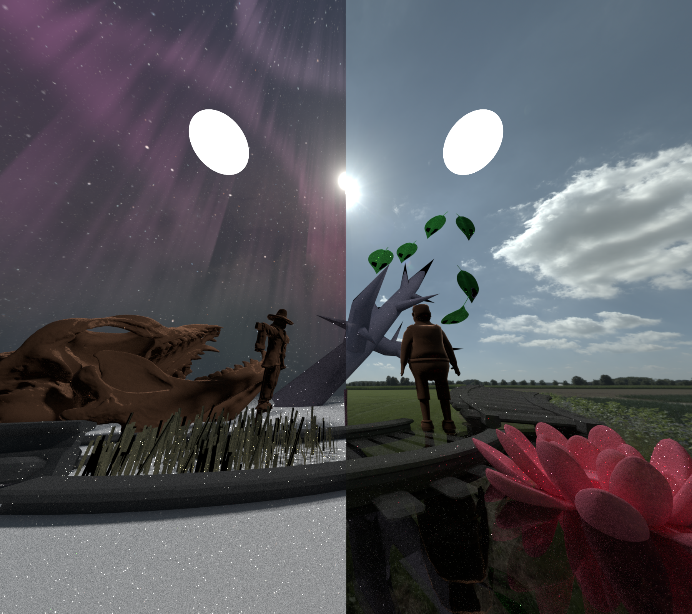
## **Other functionality**
I use python to mix two of exr file toghther. Besides, blender is used to model objects and scene.
# Feedback
...
# Supplementary
* This report template uses [Markdeep](https://casual-effects.com/markdeep/), which supports Markdown syntax in HTML file. For example usage, please refer to the [official demo document](https://casual-effects.com/markdeep/features.md.html).
* LaTeX is also supported for typing mathematical formulas:
$$
L_o(\mathbf{x}, \omega_o) = \int_{\Omega} L_i(\mathbf{x},\omega_i)\, f(\mathbf{x}, \omega_i, \omega_o)\, |\cos\theta_i|\, \mathrm{d}\omega_i
$$